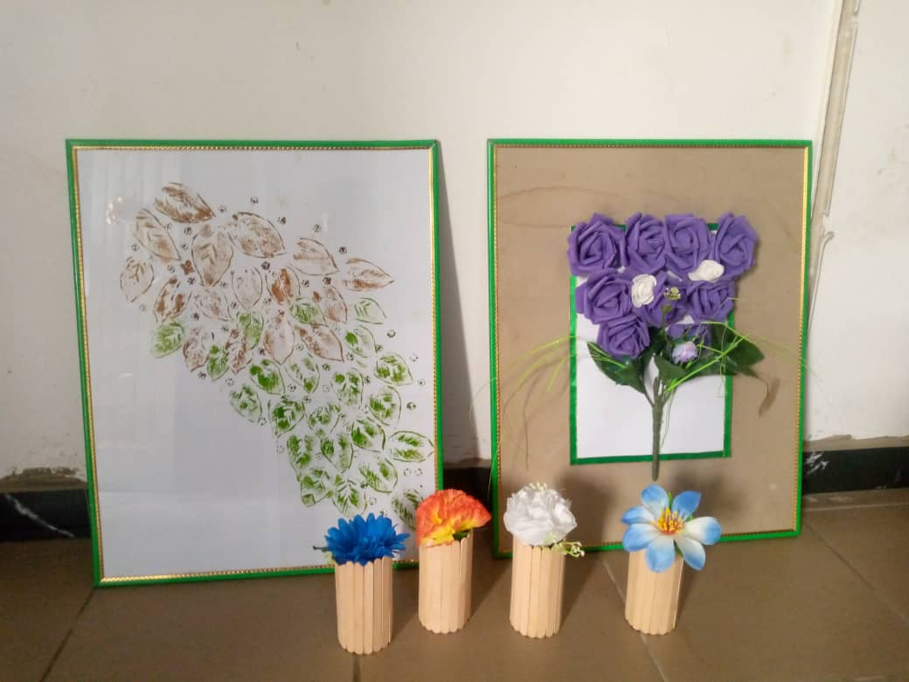

My name is Angelina and I am a Power Platform Developer based in Lagos, Nigeria.
Beyond my professional work, I have a deep passion for gardening and enjoy experimenting with homemade fertilizers.
Currently, I am nurturing tomatoes and peppers, which has been an incredibly fulfilling project.
When I am not gardening, you will likely find me developing applications that performs various automations,
cooking different delicacies enjoyed by not just me but everyone around me.
I enjoy singing too and taking a walk on sea shores or watching animations.
I am driven by a love for exploring creative solutions to challenges,
Diving into art and sharing knowledge with others.
I have so much more to engage Myself with...